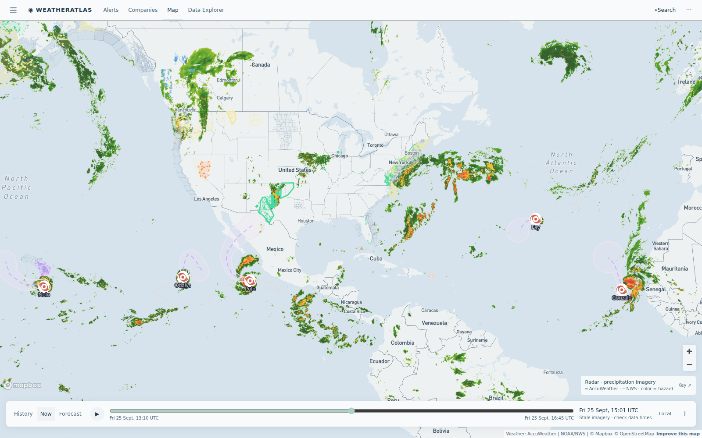

Daily severe-weather intelligence for LNG, refining, offshore, and terminal operators.

Live radar + alerts, 26 Sept ~15:00 UTC. The nor'easter's precipitation shield covers the Northeast with Storm Warnings on New England waters; AccuWeather flash-flood flags remain active on New Mexico producing fields. Tropical systems (Kay, Gonzalo, Nolo, Odalys, Polo) all remain over open water — no US land threat. Interactive radar + hurricane tracker: accuweather.taborlin.co.
| System | Status | Energy-asset impact |
|---|---|---|
| September nor'easter (East Coast) — day 4 | PEAKING | Storm Warnings live Massachusetts Bay; Gale Warnings Long Island Sound → Chesapeake; High Wind Warnings Jersey/Delaware coasts; ~45 mph gusts NYC, stronger on the New England coast with coastal flooding through the weekend — New England LNG berths, river refineries and product docks face a full marine stand-down day |
| Permian flash-flood flags (NM) — day 7 | ACTIVE | NWS Flood Warnings on Chaves/Lea/Eddy county oil and gas fields with AccuWeather flash-flood flags — pad lightning stand-downs and haul-road washout risk continue for Delaware Basin producers |
| TD Fay / TD Gonzalo (Atlantic) | WEAK | Both weak tropical depressions far at sea — no land threat; daily track checks continue at statistical season peak |
| Nolo / Odalys / Polo (E Pacific) | OPEN WATER | All three over open East Pacific water south/west of Mexico — no landfall signal; shipping lanes west of Baja see elevated seas only |
Peak nor'easter day is where forecast precision pays: hour-by-hour gust timing at the berth decides whether a tanker sails on the evening window or sits through Monday. The per-asset briefs below embed the same-hour AccuWeather enterprise vs free-API comparison, refreshed daily:
Storm Warning live on Massachusetts Bay — peak wind day. Tanker arrivals are hard wind-gated; regas continues but all marine moves are deferred to the post-storm window.
View live brief →High Wind Warnings on the Delaware coast with coastal flooding at the river mouth — dock ops suspended through the weekend; post-storm cargo queue builds Sunday.
View live brief →Gale Warnings live across Chesapeake Bay zones — peak nor'easter winds plus coastal flood warnings ring the terminal through Sunday.
View live brief →Day 7 of flash-flood flags + NWS Flood Warnings — lightning stand-downs on pads and haul-road washouts continue across active Delaware Basin acreage.
Weather ops briefs →Methodology: Alert and radar data from the AccuWeather enterprise feed and NWS via accuweather.taborlin.co, cross-referenced against a 14,600-asset North American energy facility registry. Forecast-gap comparisons embed same-hour, same-coordinate output from AccuWeather enterprise and free public APIs (OpenMeteo), refreshed daily. Facility names are used for geographic reference only.
Disclaimer: This report is an independent weather-intelligence summary prepared with AccuWeather enterprise data. It is not an official AccuWeather product and carries no warranty. Always follow official NWS/NHC warnings and your internal HSE protocols for operational decisions.